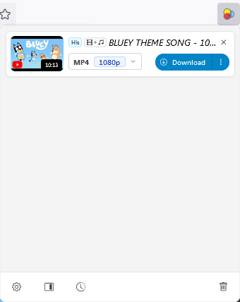
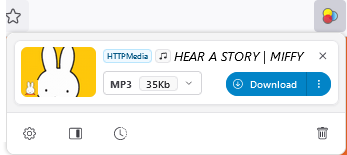
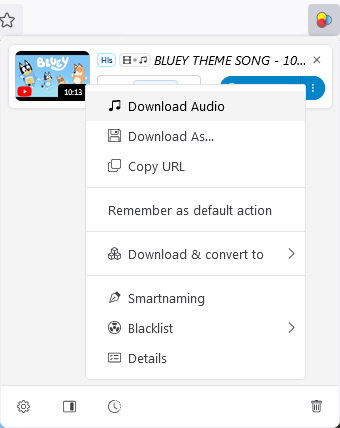

Using Video Download Helper for MYO
Author: u/playchime
Video Download Helper is a browser extension, so this cannot be used on mobile. Also, despite the name, this can be used to rip both video and audio. You first must download and install the version appropriate for the browser you want to use (the website should detect that for you automatically though). When it’s installed, you should have an icon of three primary-coloured dots on the toolbar of your browser that will allow you to activate the extension on a webpage. It looks like this:
Pressing this on a webpage that is playing audio or video content will open up a menu of options like these:
How it looks when finding a video source to download: 
How it looks when finding an audio source to download: 
(I have no idea why video tends to make the menu open much larger than audio.)
Please note you must press play on the content for Download Helper to be able to find it! Once you’ve started a download, though, you can then pause the content (you don’t need to listen to 10 minutes of the Bluey theme song, five seconds and then a pause will suffice for the software to find it LOL).
Also Video Download Helper may ask you to install its “Companion App” even after installing the browser extension. This is just part of how it works–it’s more like software than just an in-browser solution. I’ve been using it for many years at this point and I’ve never had any trouble, so I feel very confident in saying it is safe to do so!
If you’re downloading content that is strictly audio, the format displayed next to the download will already be MP3, and you can just press download and you’re done!
If the content is in video format, but you only want the audio, then you have two options. For people who want to keep this whole process free, you’ll need to convert the video with a different program, such as Media Human Audio Converter. This is what I would recommend, as it’s what I do myself! (that said if you’re downloading YouTube videos specifically with the intention to only use them as audio, it’s much better to just skip Video Download Helper altogether, and use Media Human Youtube to MP3 Converter instead, which will save you the extra step of a separate conversion since it downloads to MP3 directly, and also supports downloading of whole playlists at once).
If you do want to upgrade Download Helper to be able to do the conversions though, the extension offers this as a paid upgrade. If you have access to this feature, then you can find it by pressing the “...” button next to download to open an additional menu 
Please note as I do not have the upgrade, I can’t vouch for this feature.